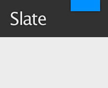

Help for Marc
Commands
[//]: # (This may be the most platform independent comment)
[//]: foo bar
[#]: foo bar
[](foo bar)
# To download
git clone https://github.com/marcpickett1/marcpickett1.github.io
# To run jekyll server
bundle exec jekyll serve
# To submit
git add --all && git commit -m "Foo." && git push -u origin master
# To create new post
cp post.md `./mmdate`post-name.md
The Rest
Text can be bold, italic, or strikethrough.
There should be whitespace between paragraphs.
We recommend including a README, or a file with information about your project.
Header 1
This is a normal paragraph following a header. GitHub is a code hosting platform for version control and collaboration. It lets you and others work together on projects from anywhere.
Header 2
This is a blockquote following a header.
When something is important enough, you do it even if the odds are not in your favor.
Header 3
% LaTeX
\vfill
\newpage
\section{Proof of God's Non-existence} #)))(((
\vfill
\memetar{94}
# Python
if True:
print 'foo'
def bar(bat):
bing
Header 4
- This is an unordered list following a header.
- This is an unordered list following a header.
- This is an unordered list following a header.
Header 5
- This is an ordered list following a header.
- This is an ordered list following a header.
- This is an ordered list following a header.
Header 6
| head1 | head two | three |
|---|---|---|
| ok | good swedish fish | nice |
| out of stock | good and plenty | nice |
| ok | good oreos |
hmm |
| ok | good zoute drop |
yumm |
There’s a horizontal rule below this.
Here is an unordered list:
- Item foo
- Item bar
- Item baz
- Item zip
And an ordered list:
- Item one
- Item two
- Item three
- Item four
And a nested list:
- level 1 item
- level 2 item
- level 2 item
- level 3 item
- level 3 item
- level 1 item
- level 2 item
- level 2 item
- level 2 item
- level 1 item
- level 2 item
- level 2 item
- level 1 item
Small image

Large image

Definition lists can be used with HTML syntax.
- Name
- Godzilla
- Born
- 1952
- Birthplace
- Japan
- Color
- Green
Long, single-line code blocks should not wrap. They should horizontally scroll if they are too long. This line should be long enough to demonstrate this.
The final element.
The Slate theme


Slate is a Jekyll theme for GitHub Pages. You can preview the theme to see what it looks like, or even use it today.

Usage
To use the Slate theme:
-
Add the following to your site’s
_config.yml:theme: jekyll-theme-slate -
Optionally, if you’d like to preview your site on your computer, add the following to your site’s
Gemfile:gem "github-pages", group: :jekyll_plugins
Customizing
Configuration variables
Slate will respect the following variables, if set in your site’s _config.yml:
title: [The title of your site]
description: [A short description of your site's purpose]
Additionally, you may choose to set the following optional variables:
show_downloads: ["true" or "false" to indicate whether to provide a download URL]
google_analytics: [Your Google Analytics tracking ID]
Stylesheet
If you’d like to add your own custom styles:
- Create a file called
/assets/css/style.scssin your site - Add the following content to the top of the file, exactly as shown:
--- --- @import "jekyll-theme-slate"; - Add any custom CSS (or Sass, including imports) you’d like immediately after the
@importline
Layouts
If you’d like to change the theme’s HTML layout:
- Copy the original template
from the theme’s repository
(Pro-tip: click “raw” to make copying easier) - Create a file called
/_layouts/default.htmlin your site. - Paste the default layout content copied in the first step
- Customize the layout as you’d like
Roadmap
See the open issues for a list of proposed features (and known issues).
Project philosophy
The Slate theme is intended to make it quick and easy for GitHub Pages users to create their first (or 100th) website. The theme should meet the vast majority of users’ needs out of the box, erring on the side of simplicity rather than flexibility, and provide users the opportunity to opt-in to additional complexity if they have specific needs or wish to further customize their experience (such as adding custom CSS or modifying the default layout). It should also look great, but that goes without saying.
Contributing
Interested in contributing to Slate? We’d love your help. Slate is an open source project, built one contribution at a time by users like you. See the CONTRIBUTING file for instructions on how to contribute.
Previewing the theme locally
If you’d like to preview the theme locally (for example, in the process of proposing a change):
- Clone down the theme’s repository (
git clone https://github.com/pages-themes/slate) cdinto the theme’s directory- Run
script/bootstrapto install the necessary dependencies - Run
bundle exec jekyll serveto start the preview server - Visit
localhost:4000in your browser to preview the theme
Running tests
The theme contains a minimal test suite, to ensure a site with the
theme would build successfully. To run the tests, simply run
script/cibuild. You’ll need to run script/bootstrap one before the
test script will work.
Markdown Cheat Sheet
This is intended as a quick reference and showcase. For more complete info, see John Gruber’s original spec and the Github-flavored Markdown info page.
Note that there is also a Cheatsheet specific to Markdown Here if that’s what you’re looking for. You can also check out more Markdown tools.
Table of Contents
Headers Emphasis Lists Links Images Code and Syntax Highlighting Tables Blockquotes Inline HTML Horizontal Rule Line Breaks Youtube videos
Headers
# H1
## H2
### H3
#### H4
##### H5
###### H6
Alternatively, for H1 and H2, an underline-ish style:
Alt-H1
======
Alt-H2
------
H1
H2
H3
H4
H5
H6
Alternatively, for H1 and H2, an underline-ish style:
Alt-H1
Alt-H2
Emphasis
Emphasis, aka italics, with *asterisks* or _underscores_.
Strong emphasis, aka bold, with **asterisks** or __underscores__.
Combined emphasis with **asterisks and _underscores_**.
Strikethrough uses two tildes. ~~Scratch this.~~
Emphasis, aka italics, with asterisks or underscores.
Strong emphasis, aka bold, with asterisks or underscores.
Combined emphasis with asterisks and underscores.
Strikethrough uses two tildes. Scratch this.
Lists
(In this example, leading and trailing spaces are shown with with dots: ⋅)
1. First ordered list item
2. Another item
⋅⋅* Unordered sub-list.
1. Actual numbers don't matter, just that it's a number
⋅⋅1. Ordered sub-list
4. And another item.
⋅⋅⋅You can have properly indented paragraphs within list items. Notice the blank line above, and the leading spaces (at least one, but we'll use three here to also align the raw Markdown).
⋅⋅⋅To have a line break without a paragraph, you will need to use two trailing spaces.⋅⋅
⋅⋅⋅Note that this line is separate, but within the same paragraph.⋅⋅
⋅⋅⋅(This is contrary to the typical GFM line break behaviour, where trailing spaces are not required.)
* Unordered list can use asterisks
- Or minuses
+ Or pluses
- First ordered list item
- Another item
- Unordered sub-list.
- Actual numbers don’t matter, just that it’s a number
- Ordered sub-list
-
And another item.
You can have properly indented paragraphs within list items. Notice the blank line above, and the leading spaces (at least one, but we’ll use three here to also align the raw Markdown).
To have a line break without a paragraph, you will need to use two trailing spaces. Note that this line is separate, but within the same paragraph. (This is contrary to the typical GFM line break behaviour, where trailing spaces are not required.)
- Unordered list can use asterisks
- Or minuses
- Or pluses
Links
There are two ways to create links.
[I'm an inline-style link](https://www.google.com)
[I'm an inline-style link with title](https://www.google.com "Google's Homepage")
[I'm a reference-style link][Arbitrary case-insensitive reference text]
[I'm a relative reference to a repository file](../blob/master/LICENSE)
[You can use numbers for reference-style link definitions][1]
Or leave it empty and use the [link text itself].
URLs and URLs in angle brackets will automatically get turned into links.
http://www.example.com or <http://www.example.com> and sometimes
example.com (but not on Github, for example).
Some text to show that the reference links can follow later.
[arbitrary case-insensitive reference text]: https://www.mozilla.org
[1]: http://slashdot.org
[link text itself]: http://www.reddit.com
I’m an inline-style link with title
I’m a relative reference to a repository file
You can use numbers for reference-style link definitions
Or leave it empty and use the link text itself.
URLs and URLs in angle brackets will automatically get turned into links. http://www.example.com or http://www.example.com and sometimes example.com (but not on Github, for example).
Some text to show that the reference links can follow later.
Images
Here's our logo (hover to see the title text):
Inline-style:

Reference-style:
![alt text][logo]
[logo]: https://github.com/adam-p/markdown-here/raw/master/src/common/images/icon48.png "Logo Title Text 2"
Here’s our logo (hover to see the title text):
Inline-style:

Reference-style:
Code and Syntax Highlighting
Code blocks are part of the Markdown spec, but syntax highlighting isn’t. However, many renderers – like Github’s and Markdown Here – support syntax highlighting. Which languages are supported and how those language names should be written will vary from renderer to renderer. Markdown Here supports highlighting for dozens of languages (and not-really-languages, like diffs and HTTP headers); to see the complete list, and how to write the language names, see the highlight.js demo page.
Inline `code` has `back-ticks around` it.
Inline code has back-ticks around it.
Blocks of code are either fenced by lines with three back-ticks ```, or are indented with four spaces. I recommend only using the fenced code blocks – they’re easier and only they support syntax highlighting.
```javascript
var s = "JavaScript syntax highlighting";
alert(s);
```
```python
s = "Python syntax highlighting"
print s
```
```
No language indicated, so no syntax highlighting.
But let's throw in a <b>tag</b>.
```
var s = "JavaScript syntax highlighting";
alert(s);
s = "Python syntax highlighting"
print s
No language indicated, so no syntax highlighting in Markdown Here (varies on Github).
But let's throw in a <b>tag</b>.
Tables
Tables aren’t part of the core Markdown spec, but they are part of GFM and Markdown Here supports them. They are an easy way of adding tables to your email – a task that would otherwise require copy-pasting from another application.
Colons can be used to align columns.
| Tables | Are | Cool |
| ------------- |:-------------:| -----:|
| col 3 is | right-aligned | $1600 |
| col 2 is | centered | $12 |
| zebra stripes | are neat | $1 |
There must be at least 3 dashes separating each header cell.
The outer pipes (|) are optional, and you don't need to make the
raw Markdown line up prettily. You can also use inline Markdown.
Markdown | Less | Pretty
--- | --- | ---
*Still* | `renders` | **nicely**
1 | 2 | 3
Colons can be used to align columns.
| Tables | Are | Cool |
|---|---|---|
| col 3 is | right-aligned | $1600 |
| col 2 is | centered | $12 |
| zebra stripes | are neat | $1 |
| There must be at least 3 dashes separating each header cell. The outer pipes ( | ) are optional, and you don’t need to make the raw Markdown line up prettily. You can also use inline Markdown. |
| Markdown | Less | Pretty |
|---|---|---|
| Still | renders |
nicely |
| 1 | 2 | 3 |
Blockquotes
> Blockquotes are very handy in email to emulate reply text.
> This line is part of the same quote.
Quote break.
> This is a very long line that will still be quoted properly when it wraps. Oh boy let's keep writing to make sure this is long enough to actually wrap for everyone. Oh, you can *put* **Markdown** into a blockquote.
Blockquotes are very handy in email to emulate reply text. This line is part of the same quote.
Quote break.
This is a very long line that will still be quoted properly when it wraps. Oh boy let’s keep writing to make sure this is long enough to actually wrap for everyone. Oh, you can put Markdown into a blockquote.
Inline HTML
You can also use raw HTML in your Markdown, and it’ll mostly work pretty well.
<dl>
<dt>Definition list</dt>
<dd>Is something people use sometimes.</dd>
<dt>Markdown in HTML</dt>
<dd>Does *not* work **very** well. Use HTML <em>tags</em>.</dd>
</dl>
- Definition list
- Is something people use sometimes.
- Markdown in HTML
- Does *not* work **very** well. Use HTML tags.
Horizontal Rule
Three or more...
---
Hyphens
***
Asterisks
___
Underscores
Three or more…
Hyphens
Asterisks
Underscores
Line Breaks
My basic recommendation for learning how line breaks work is to experiment and discover – hit <Enter> once (i.e., insert one newline), then hit it twice (i.e., insert two newlines), see what happens. You’ll soon learn to get what you want. “Markdown Toggle” is your friend.
Here are some things to try out:
Here's a line for us to start with.
This line is separated from the one above by two newlines, so it will be a *separate paragraph*.
This line is also a separate paragraph, but...
This line is only separated by a single newline, so it's a separate line in the *same paragraph*.
Here’s a line for us to start with.
This line is separated from the one above by two newlines, so it will be a separate paragraph.
This line is also begins a separate paragraph, but… This line is only separated by a single newline, so it’s a separate line in the same paragraph.
(Technical note: Markdown Here uses GFM line breaks, so there’s no need to use MD’s two-space line breaks.)
Youtube videos
They can’t be added directly but you can add an image with a link to the video like this:
<a href="http://www.youtube.com/watch?feature=player_embedded&v=YOUTUBE_VIDEO_ID_HERE
" target="_blank"><img src="http://img.youtube.com/vi/YOUTUBE_VIDEO_ID_HERE/0.jpg"
alt="IMAGE ALT TEXT HERE" width="240" height="180" border="10" /></a>
Or, in pure Markdown, but losing the image sizing and border:
[](http://www.youtube.com/watch?v=YOUTUBE_VIDEO_ID_HERE)
Referencing a bug by #bugID in your git commit links it to the slip. For example #1.
License: CC-BY
Jekyll cheat sheet
Installation
# Install the gems
gem install jekyll bundler
# Create a new site at `./myblog`
jekyll new myblog
cd myblog
# Optional: if you're targeting github-pages,
# use this Gemfile instead.
cat > Gemfile <<-END
source 'https://rubygems.org'
gem 'github-pages', group: :jekyll_plugins
END
bundle exec jekyll serve
See: Jekyll quickstart
See: github/pages-gem
Directories
./
├── _config.yml
│
├── _data/
│ └── ...
│
├── _drafts/
│ └── ...
│
├── _posts/
│ └── 2014-01-01-hello.md
│
├── _layouts/
│ ├── default.html
│ └── post.html
│
├── _includes/ - partials
│ ├── header.html
│ └── footer.html
│
└── _site/
└── ...
Front-matter
Basic frontmatter
---
layout: post
title: Hello
---
Hello! this is my post.
Attach metadata to a page by adding them on top of the page, delimited by ---.
See: Front-matter
Other frontmatter stuff
permalink: '/hello'
published: false
category: apple
categories: ['html', 'css']
tags: ['html', 'css']
Configuration
In _config.yml:
source: .
destination: _site
exclude:
- Gemfile
- Gemfile.lock
include: ['.htaccess']
All config keys are optional. See: Configuration
Markup
Page variables
<title>
{{ page.title }}
</title>
Filters
<p>
{{ page.description | truncate_words: 20 }}
</p>
Loops
{% for post in site.posts %}
<a href="{{ post.url }}">
<h2>{{ post.title }}</h2>
<p>{{ post.date | date_to_string }}</h2>
</a>
{% endfor %}
Dates
{{ page.date | date: "%b %d, %Y" }}
Conditionals
{% if page.image.feature %}
...
{% elsif xyz %}
...
{% else %}
...
{% endif %}
{% if page.category == 'React' %}
{% if page.category == 'React' or page.featured %}
{% if page.tags contains 'Featured' %}
Case
{% case shipping.title %}
{% when 'international' %}
Arriving in 2-3 weeks
{% when 'Domestic' %}
Arriving in 2-3 days
{% else %}
Thank you for your order!
{% endcase %}
Includes (partials)
{% include header.html %}
<!-- Including local vars -->
{% include header.html page=page %}
Comments
{% comment %}
This is a comment!
{% endcomment %}
Variables
Top-level variables
{{ site }} |
Data from config.yml |
{{ page }} |
From frontmatter, and page-specific info |
{{ content }} |
HTML content (use in layouts) |
{{ paginator }} |
Paginator |
See: Variables
Site
{{ site.time }}
site.time |
Current time |
site.pages |
List of pages |
site.posts |
List of blog posts |
site.related_posts |
List of posts related to current |
site.categories.CATEGORY |
List |
site.tags.TAG |
List |
site.static_files |
List |
Page
{{ page.content }} - un-rendered content
{{ page.title }}
{{ page.excerpt }} - un-rendered excerpt
{{ page.url }}
{{ page.date }}
{{ page.id }} - unique id for RSS feeds
{{ page.categories }}
{{ page.tags }}
{{ page.path }}
{{ page.dir }}
{{ page.excerpt | remove: '<p>' | remove: '</p>' }}
{{ page.excerpt | strip_html }}
<!-- blog pagination: -->
{{ page.next }}
{{ page.previous }}
Filters
Dates
{{ site.time | date: "%Y %m %d" }}
date_to_xmlschema |
→ 2008-11-07T13:07:54-08:00 |
date_to_rfc822 |
→ Mon, 07 Nov 2008 13:07:54 -0800 |
date_to_string |
→ 07 Nov 2008 |
date_to_long_string |
→ 07 November 2008 |
date: ‘%Y %m %d’ |
→ 2017 Nov 7 |
Preprocessors
{{ page.description | markdownify }}
| Filter | Description |
|---|---|
textilize |
Textile |
markdownify |
Markdown |
jsonify |
JSON |
sassify |
Sass |
scssify |
SCSS |
smartify |
Smartypants |
Array filters
{{ site.pages | where: "year", "2014" }}
| Filter | Description |
|---|---|
where: “year”, “2014” |
|
where_exp: “item”, “item.year >= 2014” |
|
group_by: “genre” |
→ {name, items} |
group_by_exp: “item”, “item.genre” |
→ {name, items} |
sort |
|
sort: ‘author’ |
|
uniq |
|
first |
|
last |
|
join: ’,’ |
|
array_to_sentence_string |
→ "X, Y and Z" |
map: ‘post’ |
Works like ‘pluck’ |
size |
|
push: ‘xxx’ |
Adds an item |
String filters
{{ page.title | default: "xxx" }}
| Filter | Description |
|---|---|
default: ‘xxx’ |
|
upcase |
|
downcase |
|
remove: ‘p’ |
|
replace: ‘super’, ‘mega’ |
|
remove_first: ‘p’ |
|
replace_first: ‘super’, ‘mega’ |
|
truncate: 5 |
|
truncatewords: 20 |
|
prepend: ‘Mr. ‘ |
|
append: ‘Jr.’ |
|
camelize |
|
capitalize |
|
strip_html |
|
strip_newlines |
|
newlines_to_br |
|
split: ’,’ |
|
escape |
|
escape_once |
|
slice: -3, 3 |
See: String filters
String filters (Jekyll-only)
{{ page.excerpt | number_of_words }}
| Filter | Description |
|---|---|
number_of_words |
|
slugify |
|
xml_escape |
→ CDATA |
cgi_escape |
→ foo%2Cbar |
uri_escape |
→ foo,%20bar |
Numbers
{{ site.posts.size | minus: 2 }}
| Filter | Description |
|---|---|
minus: 2 |
|
plus: 2 |
|
times: 2 |
|
divided_by: 2 |
|
modulo: 2 |
|
ceil |
|
floor |
|
round |
Paginator
Paginator setup
Add this to _config.yml:
paginate: 5
paginate_path: "blog/:num"
See: Paginator
Numbers
{{ paginator.page }} - page number
{{ paginator.total_posts }}
{{ paginator.total_pages }}
{{ paginator.per_page }}
Iterating through posts
{% for post in paginator.posts %} ... {% endfor %}
Previous button
{% if paginator.total_pages > 1 %}
{% if paginator.previous_page %}
<a href="{{ paginator.previous_page_path }}">Previous</a>
{% else %}
{% endif %}
{% endif %}
{{ paginator.next_page }} - page number
{{ paginator.next_page_path }}
Blogging
Paths
_posts/YEAR-MONTH-DAY-title.md
See: Blogging
Image paths

See: Image paths
Drafts
vi _drafts/a-draft-post.md
jekyll build --drafts
Posts in _drafts only show up in development, but not production.
See: Drafts
Defining excerpts
---
title: My blog post
excerpt: This post is about cats
---
Hello, let's talk about cats. (···)
Put a key excerpt in the frontmatter.
See: Excerpts
Displaying excerpts
{{ post.excerpt }}
{{ post.excerpt | remove: '<p>' | remove: '</p>' }}
{{ post.excerpt | strip_html }}
Excerpt separator
---
excerpt_separator: <!--more-->
---
Excerpt here
<!--more-->
More post body here
Alternatively, you can put excerpts inline in your post by defining excerpt_separator.
Permalinks
# _config.yml
permalink: date # /:categories/:year/:month/:day/:title.html
permalink: pretty # /:categories/:year/:month/:day/:title/
permalink: none # /:categories/:title.html
permalink: "/:title"
See: Permalinks
More features
Data
_data/members.yml
{% for member in site.data.members %}
...
{% endfor %}
See: Data
Collections
# _config.yml
collections:
- authors
# _/authors/a-n-roquelaire.md
---
name: A. N. Roquelaire
real_name: Anne Rice
---
{% for author in site.authors %}
See: Collections
Code highlighter
{% highlight ruby linenos %}
def show
...
end
{% endhighlight %}
Integration
Bundler
In _plugins/bundler.rb:
require "bunder/setup"
Bundler.require :default
Compass
Also see
- Jekyll docs jekyllrb.com
- CloudCannon Jekyll cheatsheet cloudcannon.com
- Jekyll: templates jekyllrb.com
- Liquid: output shopify.com
- Liquid: logic shopify.com
- Liquid: filters shopify.com
- Liquid for designers github.com/Shopify